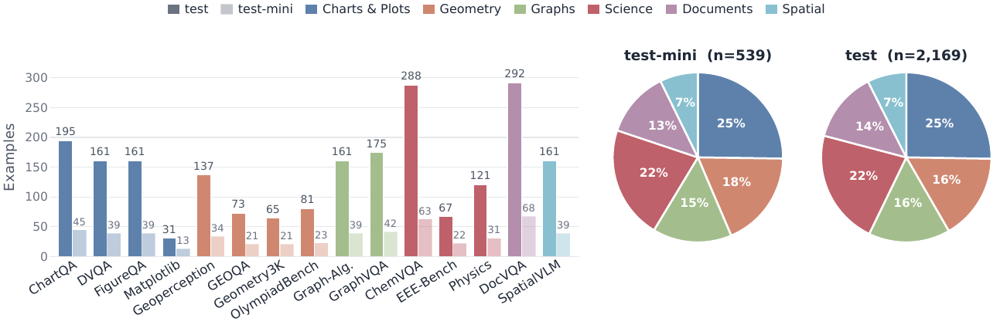
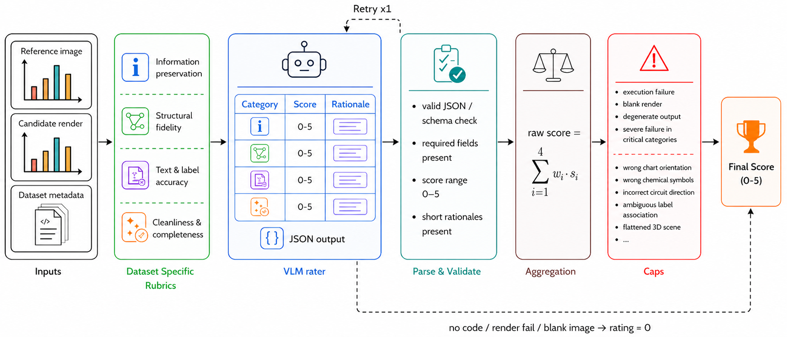

Vision2Code: A Multi-Domain Benchmark for Evaluating Image-to-Code Generation
Abstract
Image-to-code generation tests whether a vision-language model (VLM) can recover the structure of an image enough to express it as executable code. Existing benchmarks either focus on narrow visual domains, depend on paired executable reference code, or rely on generic rubrics that miss domain-specific reconstruction errors. We introduce Vision2Code, a reference-code-free benchmark and evaluation framework for multi-domain image-to- code generation. Vision2Code contains 2,169 test examples from 15 source datasets that span charts and plots, geometry, graphs, scientific imagery, documents, and 3D spatial scenes. Models generate executable programs, which we render and score against the source image using a VLM rater with dataset-specific rubrics and deterministic guardrails for severe semantic failures. We report render-success diagnostics that separate code execution failures from reconstruction quality. Human validation shows that this evaluation protocol aligns better with human judgments than either a generic visual rubric or embedding-similarity baselines. Across nine open-weight and proprietary models, we find that image-to-code performance is domain-dependent: leading models perform well on regular chart- and graph-like visuals but remain weak on spatial scenes, chemistry, documents, and circuit-style diagrams. Finally, we show that evaluator-filtered model outputs can serve as training data to improve image-to- code capability, with Qwen3.5-9B improving from 1.60 to 1.86 on the benchmark without paired source programs. Vision2Code provides a reproducible testbed for measuring, diagnosing, and improving image-to-code generation.
Benchmark and Evaluation
What Vision2Code Measures
Vision2Code measures image-to-code generation for visual reconstruction: given a source image, a model must produce a self-contained program whose execution renders an image that matches the source in the information that matters most for that visual domain. Reproduction is not defined as exact pixel copying. A good reconstruction preserves semantic and structural content such as plotted values, labels, topology, notation, document layout, or spatial relations while remaining useful as editable code.
Dataset
The benchmark contains 2,169 manually filtered test examples and a 539-example test-mini subset from 15 public visual datasets. The sources span six domains: charts and plots, geometry, graphs, scientific imagery, documents, and 3D spatial scenes. This coverage is designed to isolate distinct reconstruction challenges, including axis scales, label-to-object binding, topology and directionality, domain-specific notation, dense text layout, and spatial relations.

Evaluation Pipeline
Models are prompted to write Python code using Matplotlib and NumPy, which is then executed in a fixed rendering environment. Programs that fail, do not produce a valid rendered image receive a final score of 0.0. Successful renders are compared against the source image by a VLM rater using dataset-specific rubrics with four weighted categories and deterministic caps for severe semantic failures. Our dataset-specific rubric correlates with human ratings better than a generic rubric or embedding-similarity baselines.

Leaderboard
Recreation and Rating Examples
Selected test-mini examples with source images, model-rendered outputs, and rubric scores.